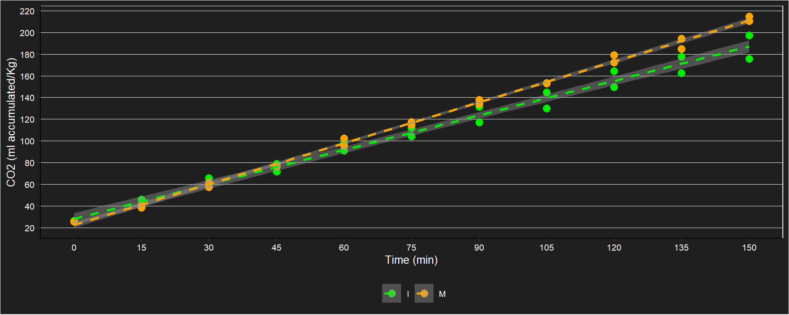
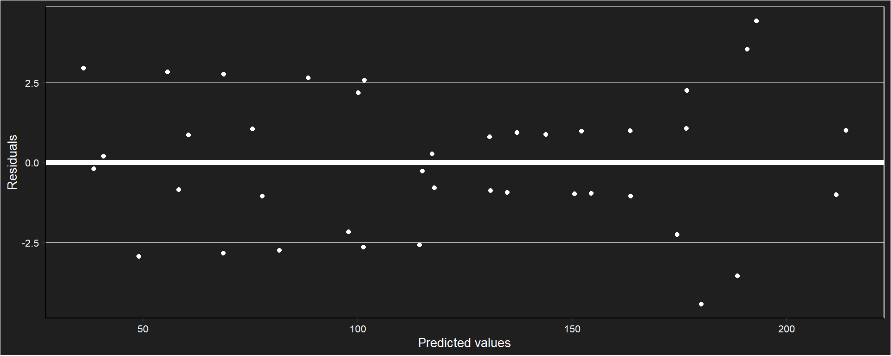
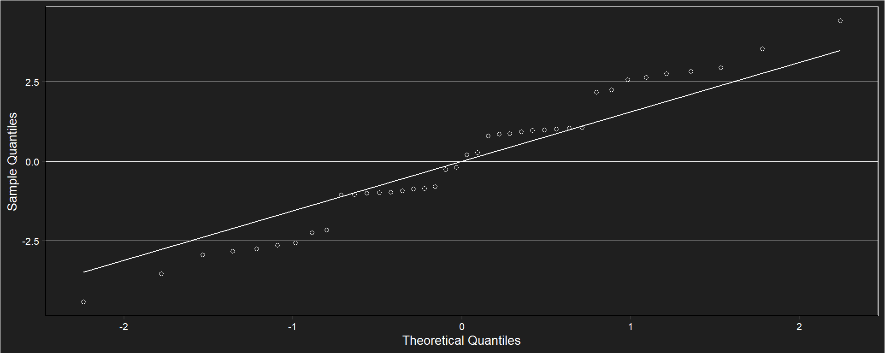
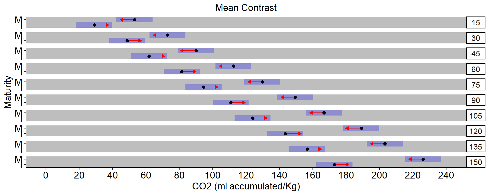
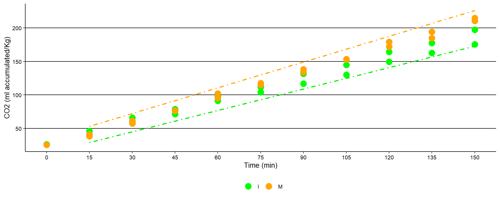

Respiration essay in Hexachlamys edulis

A caption
Immature and mature ubajay fruits were selected and randomly distributed in 4 jars, 2 immature and 2 mature, then respiration was quantified from accumulated CO2 every 15 minutes for 150 minutes.
CO2 acumulation

Descriptive table
## # A tibble: 20 × 7
## # Groups: time_min [10]
## time_min matu carbon_ac_n carbon_ac_Mean carbon_ac_sd carbon_ac_min carbon_ac_max
## <fct> <fct> <int> <dbl> <dbl> <dbl> <dbl>
## 1 15 I 2 42.5 4.97 39.0 46.1
## 2 15 M 2 39.6 1.86 38.3 40.9
## 3 30 I 2 62.2 5.13 58.5 65.8
## 4 30 M 2 59.4 2.79 57.4 61.4
## 5 45 I 2 75.2 5.23 71.5 78.9
## 6 45 M 2 76.6 0.110 76.6 76.7
## 7 60 I 2 94.9 5.39 91.1 98.7
## 8 60 M 2 99.0 4.66 95.7 102.
## 9 75 I 2 108. 5.50 104. 112.
## 10 75 M 2 116. 1.97 115. 118.
## 11 90 I 2 124. 10.3 117. 132.
## 12 90 M 2 136. 2.91 134. 138.
## 13 105 I 2 137. 10.4 130. 145.
## 14 105 M 2 153. 0.221 153. 153.
## 15 120 I 2 157. 10.5 150. 164.
## 16 120 M 2 176. 4.77 172. 179.
## 17 135 I 2 170. 10.6 163. 178.
## 18 135 M 2 190. 6.59 185. 194.
## 19 150 I 2 186. 15.4 176. 197.
## 20 150 M 2 213. 3.02 211. 215.Correlations over time

Covariance matrix
## 15 30 45 60 75 90 105 120 135 150
## 15 12.28 12.95 7.38 7.79 2.21 7.31 1.73 2.14 2.50 1.66
## 30 12.95 13.93 7.77 9.75 3.59 9.42 3.25 5.23 6.22 4.90
## 45 7.38 7.77 9.77 11.46 13.46 23.37 25.37 27.07 27.76 38.97
## 60 7.79 9.75 11.46 22.55 24.26 38.94 40.66 51.74 56.09 68.14
## 75 2.21 3.59 13.46 24.26 34.14 52.90 62.77 73.57 77.63 102.21
## 90 7.31 9.42 23.37 38.94 52.90 83.40 97.35 112.92 118.82 157.38
## 105 1.73 3.25 25.37 40.66 62.77 97.35 119.47 134.76 140.36 191.45
## 120 2.14 5.23 27.07 51.74 73.57 112.92 134.76 159.43 168.68 220.61
## 135 2.50 6.22 27.76 56.09 77.63 118.82 140.36 168.68 179.37 231.42
## 150 1.66 4.90 38.97 68.14 102.21 157.38 191.45 220.61 231.42 309.86Marginal model with first-order autoregressive structure
## gls(model = (carbon_ac) ~ time_min * matu + basal, data = resp2w,
## correlation = corAR1(form = ~1 | rep))Assumptions

##
## Shapiro-Wilk normality test
##
## data: e
## W = 0.97616, p-value = 0.5498Model coefficients
## (Intercept) time_min30 time_min45 time_min60 time_min75
## -1088.3098591 19.6250543 32.7084238 52.3334782 65.4168477
## time_min90 time_min105 time_min120 time_min135 time_min150
## 81.7897236 94.8730931 114.4981474 127.5815169 143.9543928
## matuM basal time_min30:matuM time_min45:matuM time_min60:matuM
## 24.0203019 43.2170578 0.1712202 4.3272497 7.0553453
## time_min75:matuM time_min90:matuM time_min105:matuM time_min120:matuM time_min135:matuM
## 11.2113748 14.6347734 18.7908030 21.5188986 22.4853372
## time_min150:matuM
## 29.0983267Anova
## Denom. DF: 19
## numDF F-value p-value
## (Intercept) 1 12422.598 <.0001
## time_min 9 497.680 <.0001
## matu 1 23.524 0.0001
## basal 1 18.306 0.0004
## time_min:matu 9 4.645 0.0024Simple effects
## $emmeans
## time_min = 15:
## matu emmean SE df lower.CL upper.CL
## I 29.05593 3.996413 4.38 18.32747 39.78439
## M 53.07623 3.996413 4.26 42.24267 63.90980
##
## time_min = 30:
## matu emmean SE df lower.CL upper.CL
## I 48.68099 3.996413 4.37 37.94735 59.41462
## M 72.87251 3.996413 4.38 62.14744 83.59757
##
## time_min = 45:
## matu emmean SE df lower.CL upper.CL
## I 61.76435 3.996413 4.23 50.90664 72.62207
## M 90.11191 3.996413 4.30 79.31519 100.90863
##
## time_min = 60:
## matu emmean SE df lower.CL upper.CL
## I 81.38941 3.996413 4.35 70.64128 92.13754
## M 112.46506 3.996413 4.37 101.73142 123.19869
##
## time_min = 75:
## matu emmean SE df lower.CL upper.CL
## I 94.47278 3.996413 4.28 83.65659 105.28897
## M 129.70446 3.996413 4.31 118.91264 140.49627
##
## time_min = 90:
## matu emmean SE df lower.CL upper.CL
## I 110.84565 3.996413 4.38 100.11719 121.57412
## M 149.50073 3.996413 4.26 138.66717 160.33429
##
## time_min = 105:
## matu emmean SE df lower.CL upper.CL
## I 123.92902 3.996413 4.37 113.19539 134.66266
## M 166.74013 3.996413 4.38 156.01506 177.46520
##
## time_min = 120:
## matu emmean SE df lower.CL upper.CL
## I 143.55408 3.996413 4.23 132.69637 154.41179
## M 189.09328 3.996413 4.30 178.29656 199.89000
##
## time_min = 135:
## matu emmean SE df lower.CL upper.CL
## I 156.63745 3.996413 4.35 145.88932 167.38558
## M 203.14309 3.996413 4.37 192.40945 213.87672
##
## time_min = 150:
## matu emmean SE df lower.CL upper.CL
## I 173.01032 3.996413 4.28 162.19413 183.82652
## M 226.12895 3.996413 4.31 215.33714 236.92077
##
## Degrees-of-freedom method: satterthwaite
## Results are given on the ( (not the response) scale.
## Confidence level used: 0.95
##
## $contrasts
## time_min = 15:
## contrast estimate SE df t.ratio p.value
## I - M -24.02030 7.197624 6.29 -3.337 0.0146
##
## time_min = 30:
## contrast estimate SE df t.ratio p.value
## I - M -24.19152 7.197624 6.30 -3.361 0.0141
##
## time_min = 45:
## contrast estimate SE df t.ratio p.value
## I - M -28.34755 7.197624 4.51 -3.938 0.0135
##
## time_min = 60:
## contrast estimate SE df t.ratio p.value
## I - M -31.07565 7.197624 6.28 -4.317 0.0045
##
## time_min = 75:
## contrast estimate SE df t.ratio p.value
## I - M -35.23168 7.197624 6.24 -4.895 0.0024
##
## time_min = 90:
## contrast estimate SE df t.ratio p.value
## I - M -38.65508 7.197624 6.29 -5.371 0.0015
##
## time_min = 105:
## contrast estimate SE df t.ratio p.value
## I - M -42.81110 7.197624 6.30 -5.948 0.0008
##
## time_min = 120:
## contrast estimate SE df t.ratio p.value
## I - M -45.53920 7.197624 4.51 -6.327 0.0021
##
## time_min = 135:
## contrast estimate SE df t.ratio p.value
## I - M -46.50564 7.197624 6.28 -6.461 0.0005
##
## time_min = 150:
## contrast estimate SE df t.ratio p.value
## I - M -53.11863 7.197624 6.24 -7.380 0.0003
##
## Note: contrasts are still on the ( scale
## Degrees-of-freedom method: satterthwaiteStatistically significant differences were found in the CO2 respiration rate in each time between immature and mature Hexachlamys edulis fruits.
Comparison chart

Fitted model plot
